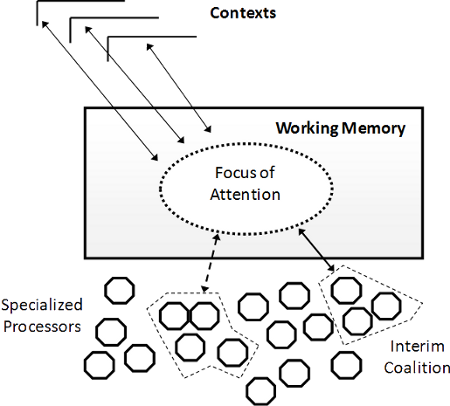

The open cognitive architecture based on Machine Consciousness
 Follow OpenCranium on Twitter
Follow OpenCranium on TwitterOpenCranium is a cognitive architecture for autonomous agents. It was created from CERA-CRANIUM architecture of Raúl Arrabales (take a look to his publication about CERA-CRANIUM). An introduction to CERA-CRANIUM, the base of OpenCranium:
Arrabales, R. et al."CERA-CRANIUM: A Test Bed for Machine Consciousness Research". International Workshop on Machine Consciousness 2009. Hong Kong. June 2009. Pages 105.
[PDF] [PPT] [BibTeX]

Global Workspace Theory (Baars, 1988).
The idea of consciousness behind CERA-CRANIUM.
ConsScale is the roadmap of development of the architecture. Currently we only have developed very basic features, none cognitive skill yet. More information in our Wiki.
Any person is welcome to join the development of OpenCranium, so please join our google group if your are interested in the archiecture. For any bug in the architecture please use the Bug Notification through GitHub